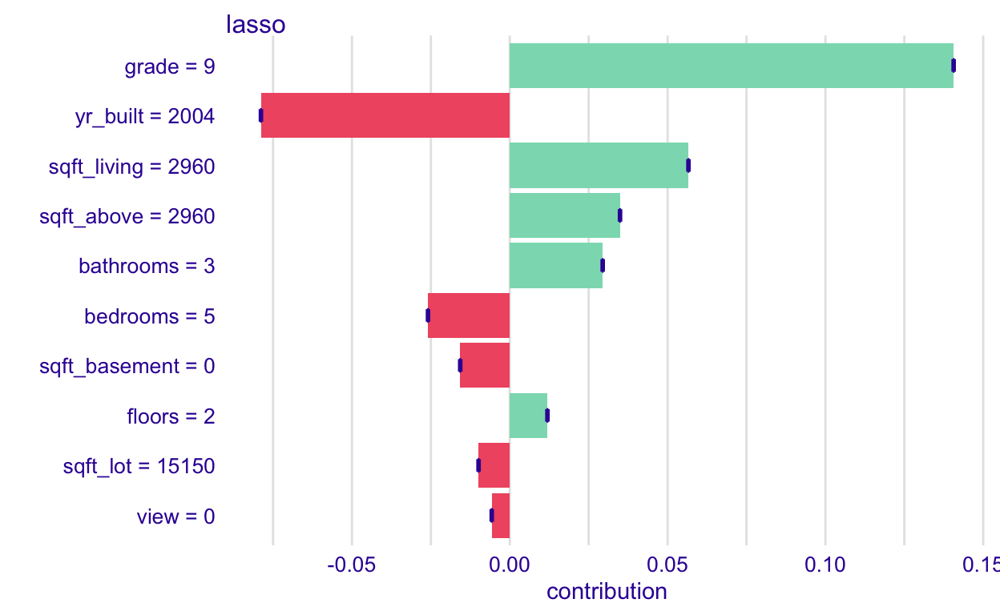
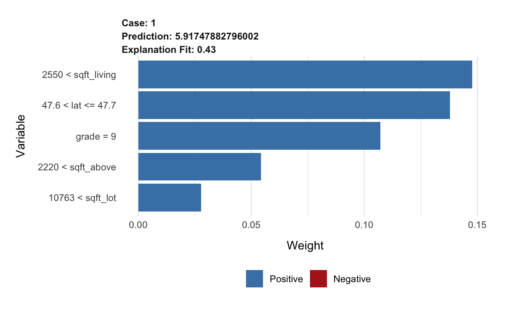

Follow along
You can download this .Rmd file below if you’d like to follow along. I do have a few hidden notes you can disregard. This document is a distill_article, so you may want to change to an html_document to knit. You will also need to delete any image references to properly knit, since you won’t have those images.
Resources
Explanatory Model Analysis by Przemyslaw Biecek and Tomasz Burzykowski, section II: Instance Level chapters.
Interpretable Machine Learning chapter of HOML by by Bradley Boehmke & Brandon Greenwell.
Interpretable Machine Learning book by Christoph Molnar, specifically chapter 5.
Set up
First, we load the libraries we will use. There will be some new ones you’ll need to install.
library(tidyverse) # for reading in data, graphing, and cleaning
library(tidymodels) # for modeling ... tidily
library(lubridate) # for dates
library(moderndive) # for King County housing data
library(DALEX) # moDel Agnostic Language for Exploration and eXplanation (for model interpretation)
library(lime) # for LIME
library(DALEXtra) # for extension of DALEX
library(patchwork) # for combining plots nicely
library(rmarkdown) # for paged tables
theme_set(theme_minimal()) # my favorite ggplot2 theme :)
Then we load the data we will use throughout this tutorial and do some modifications.
Intro
As mentioned in the global model interpretation tutorial last week, local model interpretation helps us understand the impact variables have on individual observations. In this tutorial, I will give a general overview of a few methods and show you some R code that can help you execute them. I highly suggest reading the resources I listed above, especially Explanatory Model Analysis, which is a companion to the DALEX package we will be using.
Recreate some models
Once again we will build the lasso and random forest models to predict log_price of a house from the King County data. As mentioned in the previous tutorial, we wouldn’t have to use log_price for random forest, but I’m going to keep it that way so it’s the same as the lasso model.
Recreate the lasso model:
set.seed(327) #for reproducibility
# Randomly assigns 75% of the data to training.
house_split <- initial_split(house_prices,
prop = .75)
house_training <- training(house_split)
house_testing <- testing(house_split)
# lasso recipe and transformation steps
house_recipe <- recipe(log_price ~ .,
data = house_training) %>%
step_rm(sqft_living15, sqft_lot15) %>%
step_log(starts_with("sqft"),
-sqft_basement,
base = 10) %>%
step_mutate(grade = as.character(grade),
grade = fct_relevel(
case_when(
grade %in% "1":"6" ~ "below_average",
grade %in% "10":"13" ~ "high",
TRUE ~ grade
),
"below_average","7","8","9","high"),
basement = as.numeric(sqft_basement == 0),
renovated = as.numeric(yr_renovated == 0),
view = as.numeric(view == 0),
waterfront = as.numeric(waterfront),
age_at_sale = year(date) - yr_built)%>%
step_rm(sqft_basement,
yr_renovated,
yr_built) %>%
step_date(date,
features = "month") %>%
update_role(all_of(c("id",
"date",
"zipcode",
"lat",
"long")),
new_role = "evaluative") %>%
step_dummy(all_nominal(),
-all_outcomes(),
-has_role(match = "evaluative")) %>%
step_normalize(all_predictors(),
-all_nominal())
#define lasso model
house_lasso_mod <-
linear_reg(mixture = 1) %>%
set_engine("glmnet") %>%
set_args(penalty = tune()) %>%
set_mode("regression")
# create workflow
house_lasso_wf <-
workflow() %>%
add_recipe(house_recipe) %>%
add_model(house_lasso_mod)
# create cv samples
set.seed(1211) # for reproducibility
house_cv <- vfold_cv(house_training, v = 5)
# penalty grid - changed to 10 levels
penalty_grid <- grid_regular(penalty(),
levels = 10)
# tune the model
house_lasso_tune <-
house_lasso_wf %>%
tune_grid(
resamples = house_cv,
grid = penalty_grid
)
# choose the best penalty
best_param <- house_lasso_tune %>%
select_best(metric = "rmse")
# finalize workflow
house_lasso_final_wf <- house_lasso_wf %>%
finalize_workflow(best_param)
# fit final model
house_lasso_final_mod <- house_lasso_final_wf %>%
fit(data = house_training)
Recreate the random forest model:
# set up recipe and transformation steps and roles
ranger_recipe <-
recipe(formula = log_price ~ .,
data = house_training) %>%
step_date(date,
features = "month") %>%
# Make these evaluative variables, not included in modeling
update_role(all_of(c("id",
"date")),
new_role = "evaluative")
#define model
ranger_spec <-
rand_forest(mtry = 6,
min_n = 10,
trees = 200) %>%
set_mode("regression") %>%
set_engine("ranger")
#create workflow
ranger_workflow <-
workflow() %>%
add_recipe(ranger_recipe) %>%
add_model(ranger_spec)
#fit the model
set.seed(712) # for reproducibility - random sampling in random forest choosing number of variables
ranger_fit <- ranger_workflow %>%
fit(house_training)
Individual model explanation
Again, the types of model explanations we’ll focus on in this tutorial are individual, also called local or instance-level.
CP profiles
We learned one of these methods in the previous tutorial, ceteris-peribus profiles, or CP profiles. These show how changing the value of one variable while holding the others at their values affects the predicted outcome for a specific observation.
Break down plots
Next, we’ll look at break-down plots. These plots visualize the estimated contribution of each variable to that observation’s predicted outcome. These work especially well for additive models. We will see that if a model isn’t additive, the break-down plot can change depending on the order in which we examine the variables.
Let’s start by looking at one of the break-down plots and then we’ll dive into how they’re made.
# Create an explainer for the lasso model:
lasso_explain <-
explain_tidymodels(
model = house_lasso_final_mod,
data = house_training %>% select(-log_price),
y = house_training %>% pull(log_price),
label = "lasso"
)
Preparation of a new explainer is initiated
-> model label : lasso
-> data : 16210 rows 20 cols
-> data : tibble converted into a data.frame
-> target variable : 16210 values
-> predict function : yhat.workflow will be used ( [33m default [39m )
-> predicted values : No value for predict function target column. ( [33m default [39m )
-> model_info : package tidymodels , ver. 0.1.2 , task regression ( [33m default [39m )
-> predicted values : numerical, min = 5.047104 , mean = 5.665499 , max = 6.652808
-> residual function : difference between y and yhat ( [33m default [39m )
-> residuals : numerical, min = -0.5380901 , mean = -2.92155e-14 , max = 0.617312
[32m A new explainer has been created! [39m # Create an explainer for the random forest model:
rf_explain <-
explain_tidymodels(
model = ranger_fit,
data = house_training %>% select(-log_price),
y = house_training %>% pull(log_price),
label = "rf"
)
Preparation of a new explainer is initiated
-> model label : rf
-> data : 16210 rows 20 cols
-> data : tibble converted into a data.frame
-> target variable : 16210 values
-> predict function : yhat.workflow will be used ( [33m default [39m )
-> predicted values : No value for predict function target column. ( [33m default [39m )
-> model_info : package tidymodels , ver. 0.1.2 , task regression ( [33m default [39m )
-> predicted values : numerical, min = 5.067779 , mean = 5.665052 , max = 6.73216
-> residual function : difference between y and yhat ( [33m default [39m )
-> residuals : numerical, min = -0.3414938 , mean = 0.0004474744 , max = 0.2219833
[32m A new explainer has been created! [39m # Choose an observation
new_obs <- house_testing %>% slice(5377)
# Price of new_obs's house - just to know because I can't think in logs
10^(new_obs$log_price)
[1] 1865000Now create the plot, and output a few other things. The plot shows the variables on the y-axis and this observation’s value for that variable. One sort of weird thing that I haven’t quite figured out yet is it shows that the observation’s grade is 10 when it is actually 11. I think the grade factor may have been changed to an integer and then back to a factor at some point since as.integer(new_obs$grade) = 10. For now, we won’t worry about it. Just know that grade = 10 really means grade = 11.
# Pulls together the data needed for the break-down plot
pp_lasso <- predict_parts(explainer = lasso_explain,
new_observation = new_obs,
type = "break_down") #default
# Break-down plot
plot(pp_lasso)
# Table form of break-down plot data
pp_lasso
# Data we'll use later to compare contributions
lasso_bdp <-
pp_lasso %>%
as_tibble() %>%
select(variable, contribution)
What does this graph show?
Where the bars all start is labeled the intercept. It is the average predicted log_price (predicted, not actual price) when the lasso model is applied to the training data (fed into the explainer). We could compute that “by hand”.
intercept <-
predict(house_lasso_final_mod, new_data = house_training) %>%
pull(.pred) %>%
mean()
intercept
[1] 5.665499Then, the +.254 for the grade = 10 bar (remember, that’s actually grade = 11), is the change in average prediction if grade was fixed at 11. We can also do that “by hand”. First, we set all grades in the training set to 11. Then find the new average predicted log_price when the lasso model is applied to this modified training data. And, lastly, compute the difference.
# Put in grade = "11" for all observations
data_grade11 <- house_training %>%
mutate(grade = "11")
# Find predictions
avg_grade11 <-
predict(house_lasso_final_mod, new_data = data_grade11) %>%
summarize(avg_grade11 = mean(.pred)) %>%
pull(avg_grade11)
# Compute difference
avg_grade11 - intercept
[1] 0.2544681So, a grade of 11 contributes 0.254 to the average predicted score, for this observation. Let’s do one more level “by hand”, the sqft_living = 3790 bar. Now set grade = 11 and sqft_living = 3790 and find the new average predicted log_price when the lasso model is applied to this modified training data. Then, compute the difference between this and the previous average predicted log_price, when only fixing grade, 5.9199676.
# Put in grade = "11" and sqft_living = 3790 for all observations
data_grade11_sqft3790 <- house_training %>%
mutate(grade = "11",
sqft_living = 3790)
# Find predictions
avg_grade11_sqft3790 <-
predict(house_lasso_final_mod, new_data = data_grade11_sqft3790) %>%
summarize(avg_grade11_sqft3790 = mean(.pred)) %>%
pull(avg_grade11_sqft3790)
# Compute difference
avg_grade11_sqft3790 - avg_grade11
[1] 0.09490967So, sqft_living of 3790 contributes 0.095 to the average predicted score, for this observation.
In additive models, like lasso without interactions, contributions don’t change due to which variables are considered first. In the code below, we give a new order in which to consider the variables. The plot looks different, but the length of the bars is the same, thus the contribution is the same
pp_lasso_ord1 <- predict_parts(explainer = lasso_explain,
new_observation = new_obs,
type = "break_down", #default
order = c("bathrooms",
"floors",
"condition",
"sqft_basement",
"sqft_living",
"date",
"waterfront",
"grade",
"yr_built",
"bedrooms",
"sqft_lot",
"view",
"sqft_above",
"id",
"zipcode",
"sqft_living15",
"lat",
"sqft_lot15",
"yr_renovated",
"long"))
plot(pp_lasso_ord1)
Joining together the new, reordered version and the original version, we can see that the contributions are the same.
pp_lasso_ord1 %>%
as_tibble() %>%
select(variable, contribution) %>%
left_join(lasso_bdp, by = "variable") %>%
rename(reordered = contribution.x,
original = contribution.y)
Now, let’s do this for the random forest model
# Pulls together the data needed for the break-down plot
pp_rf <- predict_parts(explainer = rf_explain,
new_observation = new_obs,
type = "break_down")
# Break-down plot
plot(pp_rf)
# Used later to compare variable reordering
rf_bdp <- pp_rf %>%
as_tibble() %>%
select(variable, contribution)
What does this show again? The intercept bar is the average predicted log_price when the random forest is applied to all the training data. I’ll do one more hand-computation to illustrate (you don’t ever have to do this - it’s just to give you some extra understanding of what the function does).
rf_avg_pred <-
predict(ranger_fit, new_data = house_training) %>%
pull(.pred) %>%
mean()
rf_avg_pred
[1] 5.665052Then, the +0.114 next to the lat = 47.6351 bar, is the change in average prediction if latitude was fixed at 47.6351. So lat = 47.6351 increased the log_price by 0.114.
# Fix latitude at 47.6351
data_lat <- house_training %>%
mutate(lat = 47.6351)
# Find average predictions
rf_lat47 <-
predict(ranger_fit, new_data = data_lat) %>%
summarize(avg_lat = mean(.pred)) %>%
pull(avg_lat)
# Compute difference
rf_lat47 - rf_avg_pred
[1] 0.1139563Now, let’s see what happens when we change the order in which the variables are considered in the random forest model, which is not additive.
#Change order
pp_rf_ord1 <- predict_parts(explainer = rf_explain,
new_observation = new_obs,
type = "break_down", #default
order = c("bathrooms",
"floors",
"condition",
"sqft_basement",
"sqft_living",
"date",
"waterfront",
"grade",
"yr_built",
"bedrooms",
"sqft_lot",
"view",
"sqft_above",
"id",
"zipcode",
"sqft_living15",
"lat",
"sqft_lot15",
"yr_renovated",
"long"))
# Break-down plot
plot(pp_rf_ord1)

# Join original ordering and compute difference
pp_rf_ord1 %>%
as_tibble() %>%
select(variable, contribution) %>%
left_join(rf_bdp, by = "variable") %>%
rename(reordered = contribution.x,
original = contribution.y) %>%
mutate(diff = round(reordered - original,3)) %>%
arrange(desc(abs(diff)))
I have ordered the variables by their differences in contribution. We can see that the order in which the variables are considered affects the results. Notice that the bathrooms = 3.75 contribution even changes sign.
The original ordering is based on a variable importance score, discussed in depth here. Next, we will learn about SHapley Additive exPlanations (SHAP), another way we can try to account for these differences.
SHapley Additive exPlanations (SHAP)
SHAPs are based on Shapley values. I am not going to go into the theoretical detail here. Please see the chapter in Explanatory Model Analysis or Interpretable Machine Learning if you are interested. Instead, I will explain the intuition and how to run it in R and interpret the results.
The idea is to take change the order in which we consider the variables in the break-down plots, ie. a permutation or reordering of the variables, and then to average the contributions. That’s it! Ideally, we would look at every possible permutation, but since that takes a lot of time, we will only look at a sample of them.
And, the R code to execute this once again uses the predict_parts() function. The type = "shap" and there is an additional argument, B, which is how many permutations of the variables we desire. I recommend starting small. In this case, 10 already ran for quite a while, so I’ll stick with that. You might consider adding cache=TRUE to the code chunk options so you don’t have to re-run this section every time you knit the file.
rf_shap <-predict_parts(explainer = rf_explain,
new_observation = new_obs,
type = "shap",
B = 10 #number of reorderings - start small
)
plot(rf_shap)

What does this graph show?
Each bar shows the average contribution of each variable’s value to the predicted response for this observation. So, the grade of 11 contributes almost an additional 0.15 to the predicted log_price for this observation, on average. The boxplot shows the variation across permutations of the variables’ order of consideration. If the variation is large, and especially if the boxplot encompasses both postitive and negative values, we will be less confident in its exact effect.
Notice that when we apply this to the lasso model, the boxplots are just a point because permuting the order in which we consider the variables doesn’t matter with additive models. So, you should only bother to do this with non-additive models.
lasso_shap <-predict_parts(explainer = lasso_explain,
new_observation = new_obs,
type = "shap",
B = 10 #number of reorderings - start small
)
plot(lasso_shap)

Local Interpretable Model-agnostic Explanations (LIME)
The last local interpretable machine learning method I will discuss is LIME. Christoph Molnar, in his book Interpretable Machine Learning, gives a great overview of how these are constructed:
First, forget about the training data and imagine you only have the black box model where you can input data points and get the predictions of the model. You can probe the box as often as you want. Your goal is to understand why the machine learning model made a certain prediction. LIME tests what happens to the predictions when you give variations of your data into the machine learning model. LIME generates a new dataset consisting of perturbed samples and the corresponding predictions of the black box model. On this new dataset LIME then trains an interpretable model, which is weighted by the proximity of the sampled instances to the instance of interest.
Often a simple decision tree or LASSO model is used as the interpretable model.
We are going to use the predict_surrogate() function and its associated plot() function to perform LIME. The functions we use call functions from the lime library behind the scenes. Using these functions will create a local LASSO model with a maximum of K variables (chosen via the n_features argument in the function).
The arguments we need to provide to the function are: * explainer: the explainer we defined earlier
* new_observation: the observation we’re interested in examining - this cannot have the outcome/response variable in it or you will get an error!
* n_features: the maximum number of variables that will be included in the local LASSO model
* n_permutations: the number of perturbed samples. To elaborate on the quote above from Christoph Molnar, a perturbation of our observation of interest means that the values of the variables are slightly modified from the observation of interest- think of it as jittering in geom_jitter(). They are weighted by the distance from the observation of interest. You can read more detail here. * type: the type of LIME method to use. I will only discuss lime but there are other options.
Let’s look at an example and then discuss the output. I set.seed() for reproducibility of the random perturbations. Like I mentioned above, we need to eliminate the outcome variable from the observation of interest.
set.seed(2)
# NEED these two lines of code always!
# They make sure our explainer is defined correctly to use in the next step
model_type.dalex_explainer <- DALEXtra::model_type.dalex_explainer
predict_model.dalex_explainer <- DALEXtra::predict_model.dalex_explainer
lime_rf <- predict_surrogate(explainer = rf_explain,
new_observation = new_obs %>%
select(-log_price),
n_features = 5,
n_permutations = 1000,
type = "lime")
lime_rf %>%
select(model_r2, model_prediction, prediction) %>%
distinct()
These are some of the model-level outputs. The model_r2 gives overall model performance (I think it’s a type of \(R^2\)), the prediction is the prediction from the original model, and the model_prediction is the prediction from this local model. I like to look to see how close the original prediction matched the local model prediction. After looking at these high-level stats, examine the plot.
plot(lime_rf) +
labs(x = "Variable")

What does this show us?
- The predicted value from the original random forest model (Prediction) is about 6.17.
- The predicted value from the local model is not shown, but we saw that in the output above.
- The (Explanation fit) is an overall performance metric for the local model -
model_r2from the output above.
- The bars show the variables orderd by weight, giving an indication of which variables are most important in the local model.